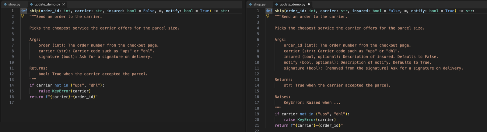
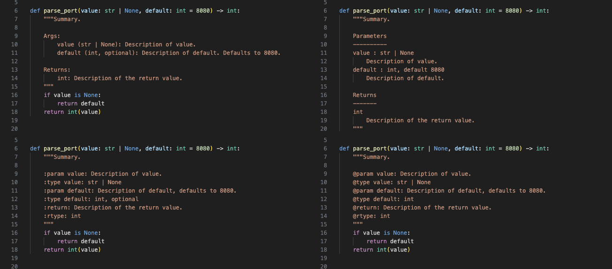

Docstring Generator & Python Docstring Updater (Google, NumPy, Sphinx, JSDoc)
Docstring Generator & Python Docstring Updater (Google, NumPy, Sphinx, JSDoc), a VS Code extension by Zovo
Free docstring generator for Python: type """ under a def or class and press Enter. Google, NumPy, Sphinx (reST) and Epytext styles or your own template, filled from the signature: type hints, defaults, *args, **kwargs, positional-only and keyword-only parameters, return type, yield, raise, dataclass fields and __init__ arguments. Updates a python docstring when the signature changes and keeps your text. JSDoc with TypeScript types for JS and TS. No sign-in, works offline.
Free, MIT license. Needs VS Code 1.90.0 or newer. Extension ID zovo.zovo-docstring-generator, version 0.2.0.

Free, no sign-in, works offline. No network calls, no telemetry, no Python install needed.
Type """ on the line under a def or class and press Enter. The docstring is filled from the signature: parameters, type hints, defaults, return type, what the function yields and what it raises. When you change the signature later, Update Docstring fixes the docstring and keeps the text you wrote.
Questions people ask
Is Docstring Generator & Python Docstring Updater (Google, NumPy, Sphinx, JSDoc) free?
Yes. Docstring Generator & Python Docstring Updater (Google, NumPy, Sphinx, JSDoc) is free and MIT licensed.
How do I install Docstring Generator & Python Docstring Updater (Google, NumPy, Sphinx, JSDoc)?
Click "Install in VS Code" above, or search for zovo.zovo-docstring-generator in the Extensions view.
What you get
- Four styles and your own: Google (default), NumPy, Sphinx (reST) and Epytext, or a custom Mustache template file.
- Read from the real signature, with a bundled parser (tree-sitter), not with regular expressions:
- type hints, including
str | None,list[int]anddict[str, list[int]] - defaults (
Defaults to 2.,default 2,, optional) *argsand**kwargs, positional-only/and keyword-only*parameters- signatures over many lines, with comments inside
- return type,
yield(a Yields section with the item type ofIterator[T]) raise Xin the body; raises inside nested functions are left out, andraise errinexcept ValueError as errbecomes ValueErrorselfandclsskipped,@staticmethodkept,@propertygets a summary only- Classes: the
__init__arguments go in the class docstring (not the base classes). Dataclass, attrs, pydantic and NamedTuple fields, andself.x = ...attributes from__init__, go under Attributes. - Update Docstring, after the signature changed:
- a renamed parameter keeps its description
- a new parameter gets a placeholder
- a removed parameter disappears if it only had a placeholder; if it has your text, it stays and is marked
[removed from the signature] - types follow the hints; missing Returns, Yields and Raises sections are added
- the summary, examples and notes are not touched, and each docstring keeps its own style
- Whole file: Update All Docstrings in File and Add Missing Docstrings in File. Turn on
zovoDoc.updateOnSaveto update when you save. - Light bulb: on a
deforclassline, Generate docstring or Update docstring (renamed a to alpha; added beta) shows what will change. - Module docstrings: at the top of the file, without an indent.
- Notebooks: works in the Python cells of Jupyter notebooks too.
- JSDoc for JavaScript and TypeScript: type
/**above a function and pick JSDoc with types, or run Generate JSDoc. You get@param {type}from TypeScript (or from the default value in JavaScript),[optional=default], destructured properties,@returns,@throws {Error},@yieldsand@template. Run it again after a change to update it. - Large files: only the function you document is parsed. In 4 real VS Code test runs on a 10,407-line file, a docstring took 0.2 to 3.2 ms, and Update All Docstrings in File checked all 1,735 definitions in 92 to 146 ms.
Why this one
The most installed Python docstring extension on the Marketplace has had no release since February 2022. Its open issues ask for these things. Each row is checked in this extension's tests and in the real VS Code gate:
| What users report | Where | Here |
|---|---|---|
| No way to update a docstring after the signature changed | #28 "Update docstring" (40 reactions), #255, #177 (renamed parameter), #179 (on save) | Update Docstring, Update All Docstrings in File and update on save. Renamed parameters keep their text, removed ones with text are kept and marked. |
@dataclass classes get no fields | #170 (28 reactions) | Fields become Attributes, with type and default. ClassVar is left out. |
| Class docstring lists the base classes as arguments | #246 | The __init__ arguments are listed, not the base classes. |
| No positional-only or keyword-only parameters | #262 | / and * are read; the parameters around them are all listed. |
| A triple-quoted string in the body (an SQL query) stops the docstring | #311, #68 | Works: the parser knows where strings start and end. |
| Docstring indented by a guess, which breaks the code after a signature with aligned continuation lines | #315 | The indent comes from the function body (or the line you typed on). |
| Module docstring gets an indent | #152 | No indent at the top of the file. |
| Non-ASCII names break the parameter list | #183, #308 | größe, café and Optional[Gerät] come out right. |
This extension is not made by, and does not replace, any other publisher's extension. If you used a custom template there, the common Mustache tags ({{summaryPlaceholder}}, {{#args}}, {{#kwargs}}, {{var}}, {{typePlaceholder}}, {{descriptionPlaceholder}}, {{#returns}}, {{#exceptions}}, {{#yields}}) work here too.
Update keeps your text

The four styles

Commands
| Command | What it does |
|---|---|
| Docstring: Generate Docstring (Cmd+Shift+2 / Ctrl+Shift+2) | Docstring for the def or class at the cursor, or JSDoc in JS and TS |
| Docstring: Update Docstring (Signature Changed) | Brings the docstring (or JSDoc) at the cursor in line with the signature |
| Docstring: Update All Docstrings in File | The same for every docstring in the file |
| Docstring: Add Missing Docstrings in File | A docstring for every public function and class that has none |
| Docstring: Generate JSDoc | JSDoc with types for the function at the cursor |
| Docstring: Docstring Coverage Report (Workspace) | Which functions and classes have no docstring, or a stale one, in every Python file |
| Docstring: Choose Docstring Style | Google, NumPy, Sphinx, Epytext or custom |
Settings
| Setting | Default | |
|---|---|---|
zovoDoc.style | google | google, numpy, sphinx, epytext, custom |
zovoDoc.customTemplatePath | Mustache template. Relative to the workspace; ~, ${workspaceFolder}, ${userHome} and ${env:NAME} work | |
zovoDoc.includeTypes | always | always (hint or placeholder), hinted (only from hints), never |
zovoDoc.includeDefaults | true | Mention default values |
zovoDoc.optionalMarker | true | , optional after the type when there is a default |
zovoDoc.quoteStyle | """ | Or ''' |
zovoDoc.summaryOnNewLine | false | Summary on the line after the quotes (pydocstyle D213) |
zovoDoc.blankLineAfterLastSection | false | Blank line before the closing quotes (D413) |
zovoDoc.includeExtendedSummary | false | Add a placeholder for a longer description |
zovoDoc.classInitArguments | class | Document __init__ arguments in the class docstring, or leave them to __init__ |
zovoDoc.update.removedParameters | mark | mark or delete removed parameters that have your text |
zovoDoc.updateOnSave | false | Update docstrings when you save a Python file |
zovoDoc.generateOnTripleQuote / generateOnEnter | true | The """ suggestion, and Enter when the suggestion was not picked |
zovoDoc.jsdoc.typesInTypeScript | true | {types} in JSDoc in TypeScript files |
Custom template
Set zovoDoc.style to custom and point zovoDoc.customTemplatePath to a file like this:
{{summaryPlaceholder}}
{{#parametersExist}}
Args:
{{#params}}
{{var}} ({{typePlaceholder}}): {{descriptionPlaceholder}}
{{/params}}
{{/parametersExist}}
{{#returnsExist}}
Returns:
{{#returns}}
{{typePlaceholder}}: {{descriptionPlaceholder}}
{{/returns}}
{{/returnsExist}}Lists: params (all), args (no default), kwargs (with default), attributes, exceptions, returns, yields. In a list: var (with * or **), name, type, typePlaceholder, default, descriptionPlaceholder. Flags: parametersExist, argsExist, kwargsExist, attributesExist, exceptionsExist, returnsExist, yieldsExist. Also {{^flag}} (when not), {{! comments}} and {{&default}}.
Privacy
The extension never opens a network connection. The parser is bundled (tree-sitter, MIT). Nothing is collected. In Restricted Mode, a template path from the workspace settings is ignored.
Works in
VS Code 1.90 or newer, so it also installs in Cursor, Windsurf, VSCodium and other editors built on VS Code. Tested in VS Code 1.142 with Pylance on and off, and in the Python cells of a Jupyter notebook.
Install Docstring Generator & Python Docstring Updater (Google, NumPy, Sphinx, JSDoc)
Click the button to open VS Code and install it, or press Ctrl+P (Cmd+P on macOS) in VS Code and run ext install zovo.zovo-docstring-generator.
Free, MIT license. Needs VS Code 1.90.0 or newer. Extension ID zovo.zovo-docstring-generator, version 0.2.0.
Source code and issues are on GitHub.
Zovo Pro and support
Zovo Pro: USD 19 once, every Zovo viewer. It turns on the Pro tools in this extension and in the other Zovo extensions you use. The free features stay free.
After a card payment your license key shows on the next page. Paste it with the command "Zovo Pro: Enter a key".
You can also support the work with no Pro:
Need your format supported?
Open a format request with a sample file, and I reply there whether it can be done. For USD 299 once, through this GitHub Sponsors tier, I add your file format or a missing feature to this extension, with tests, within 7 days.